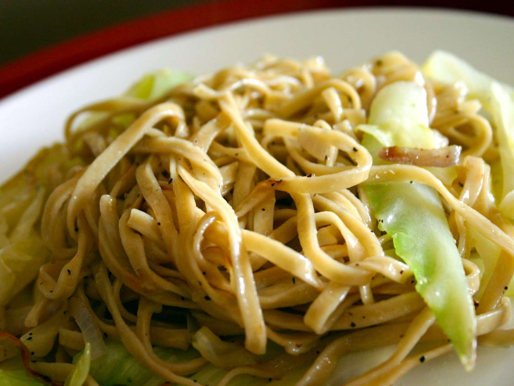

Fried Cabbage and Egg Noodles

Description
Cabbage browned in butter pairs with egg noodles for a rich, comforting dish, ready in 30 minutes.
Ingredients
- 1 (16 ounce) package egg noodles
- 1 stick butter
- 1 medium head green cabbage, chopped
- salt and pepper to taste
Steps
- Bring a large pot of lightly salted water to a boil. Add egg noodles and cook until the pasta is tender yet firm to the bite, about 5 minutes; drain.
- Meanwhile, melt butter in a large skillet over low heat. Add cabbage and season with salt and pepper. Cover and cook until the cabbage begins to brown, 5 to 7 minutes. Add cooked noodles; cook and stir until the noodles begin to brown, about 5 minutes.
Home